Dangun Calendar
Elysium has two official calendars—the solar calendar, which is used as well in the Upper Lands—and the lunar calendar, which is used primarily for religious reasons, as well as on official documents. A persons age and birth date are determined based on their lunar birthday.
The months are only as long as the lunar cycle, approximately 29 and a half days. The first day of each month lands on the new moon. Becuase of the variability of the moon cycle, every couple years a 'leap month' will be added to the calendar to keep the lunar calendar in-step with the solar calendar. 
In Elysium's state religion, Darui Saenggi (달의 생기), the principle phases of the lunar cycle also correspond to the life cycle of Eomoni Dal (어머니 달), or Mother Moon. Her four faces have corresponding traits, personalities, and auspicious actions which are recommended to be performed.

New Moon (신월)
First Quarter Moon (상현달)
Full Moon (보름달)
Last Quarter Moon (하현달)